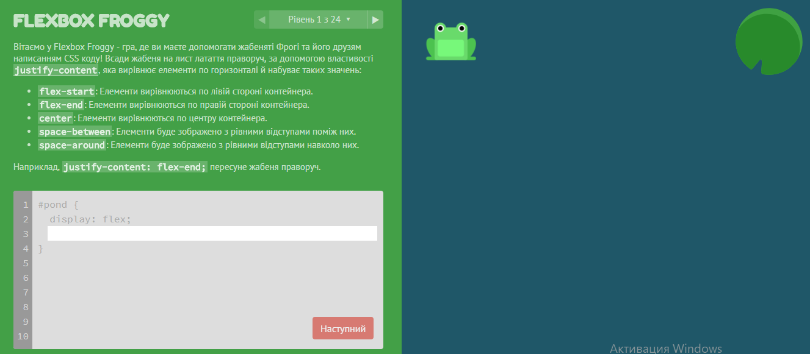

Навчайся із задоволенням!
FLEXBOX FROGGY
Логічна гра, в якій ви повинні допомогти кольоровим жабам дістатися до їх улюблених латаття. Робити це вам потрібно буде за допомогою CSS Flexbox, що дуже допоможе розвинути навички верстки. Підказки покажуть, як краще вирішити кожну задачу, але фінальне рішення залишається за вами - способів вирішення завжди кілька.
Відповіді :https://www.agreatdaytocode.com/flexbox-froggy/